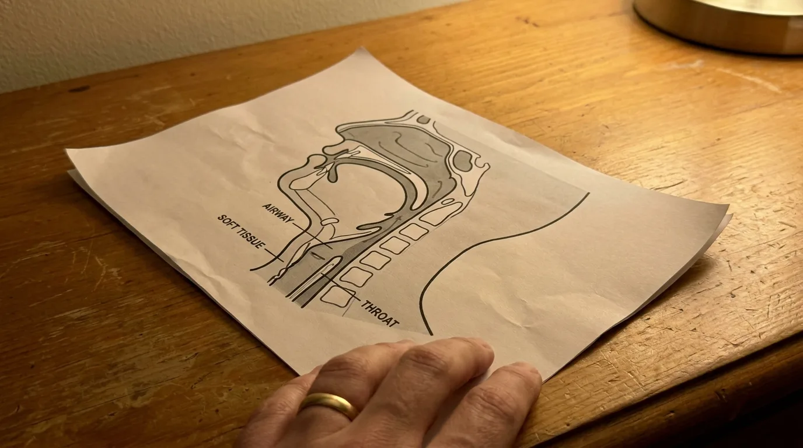
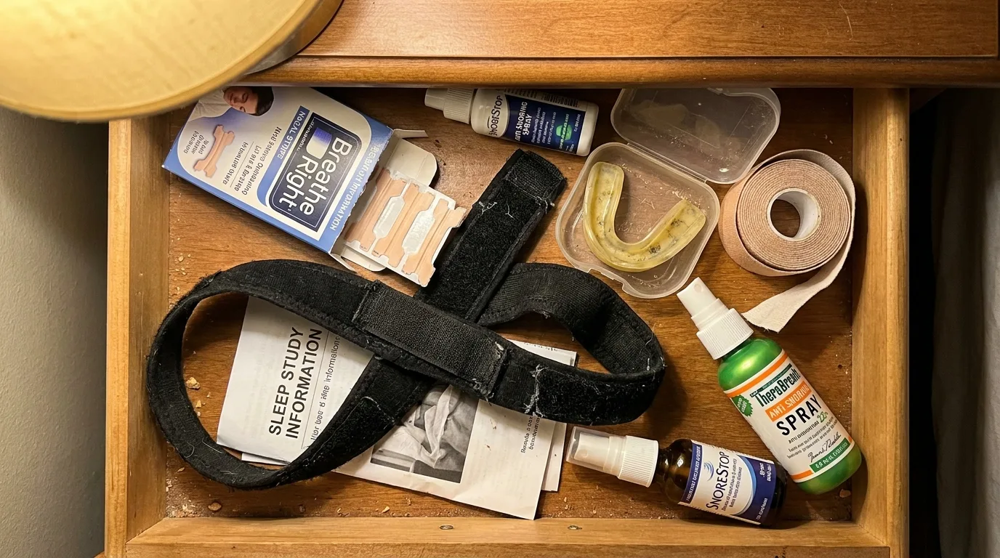
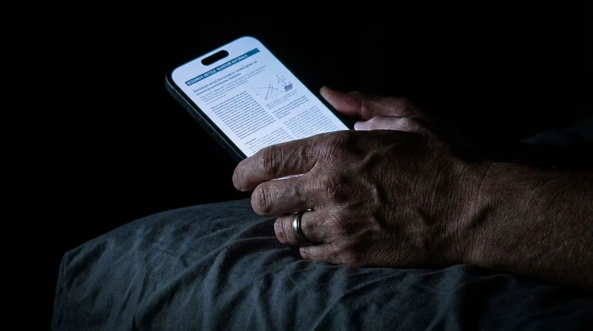
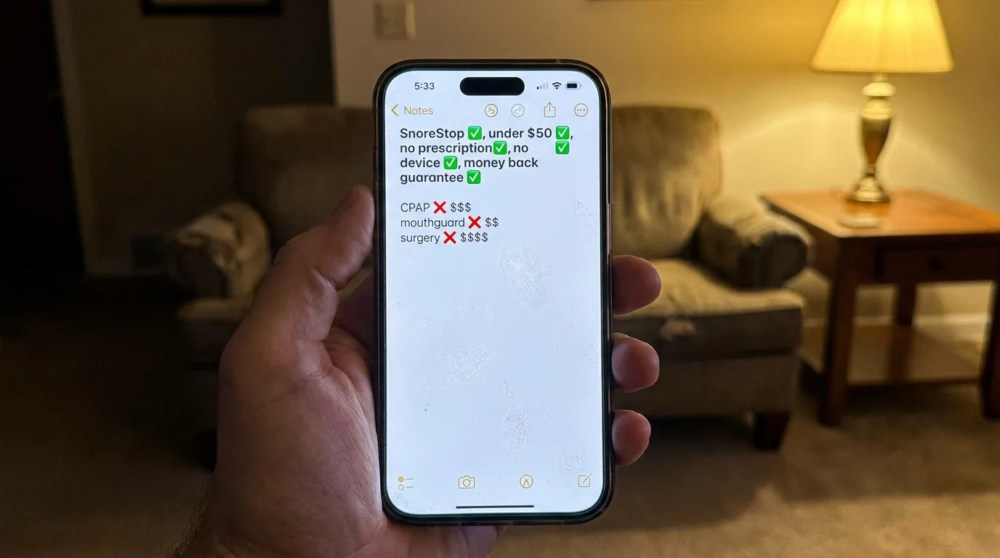

If you have been snoring for years, and nothing you have tried has actually fixed it, the reason is almost certainly not what you have been told.
In thirty two years of clinical practice I have treated thousands of patients for chronic snoring. They arrive carrying the same exhausted look and the same quiet conclusion. I have tried everything. I think I just have to live with it.
They have tried the strips. The tape. The chin straps. The mouthguards. The CPAP machines that ended up in a closet within six weeks. Some have gone as far as surgery and were still snoring on the other side of it.
None of those approaches address the actual cause of the noise. That is the entire reason you are still snoring.
What follows is the same explanation I give every patient who sits across from me. The mechanism, the reason almost every product on the market fails, and the natural formula that has been quietly stopping snoring in patients of mine for over three decades.
Snoring Is A Throat Problem. Not A Nose Problem.
This is the single most important thing to understand, because it dictates which solutions can possibly work and which ones cannot.
When you fall asleep, the soft tissues at the back of your throat relax. In a healthy airway those tissues stay open. In an inflamed or congested airway they swell, accumulate mucus, and partially collapse inward. When air pushes through that narrowed passage it forces those tissues to vibrate hundreds of times per minute.
That vibration is the sound your partner hears every night.
The villain is not the nose. It is not the position you sleep in. It is not your weight, although weight can make it worse. The villain is the inflammation, the mucus, and the soft tissue at the back of your throat.
Once that fact is clear, the rest of this article makes sense.

Why The Products You Have Tried Did Not Work
Each one targets the wrong part of the body.
Nasal strips open the nostrils. The snoring is happening in your throat.
Mouth tape and chin straps force the mouth closed. The airway behind the mouth is still narrowed.
Mouthguards and mandibular advancement devices physically pull the lower jaw forward. The throat tissue is still inflamed. Costs fifteen hundred to four thousand dollars when properly fitted, and frequently causes jaw pain over time.
CPAP machines force pressurized air down the throat. Necessary in severe sleep apnea, but between thirty and fifty percent of patients prescribed one stop using it within months.
Surgery removes or stiffens soft tissue. Risky, expensive, and often returns to baseline as the body re-inflames over time.
None of these reduce the inflammation that is causing the airway to narrow in the first place. That is the entire reason you are still snoring after spending money on them.

What Snoring Is Doing To Your Body While You Sleep
Most patients are unaware of this part. It is rarely discussed at the level it deserves.
The vibration of throat tissue during snoring, occurring hundreds of times per minute across thousands of nights, has been linked in published research to thickening of the carotid arteries. These are the major vessels carrying oxygenated blood to the brain. They run directly alongside the soft tissue that vibrates when you snore.
Chronic snoring has further been associated with elevated blood pressure, irregular heart rhythm, daytime fatigue that does not respond to caffeine, and early markers of cognitive decline.
You feel none of it while it is happening. You wake up feeling normal, or you blame the fatigue on something else. The damage accumulates underneath your awareness.
This is why I no longer let patients in my office treat their snoring as a noise problem. It is not a noise problem. It is a circulatory and neurological problem that produces noise as a side effect.
"The patients who finally take this seriously are usually the ones whose blood pressure has started climbing for no obvious reason. By then we are managing damage that did not need to be there."
What Actually Stops Snoring
The solution must address the cause. Reduce the inflammation in the throat. Clear the mucus that has accumulated in the airway. Allow the soft tissue to remain in its open, resting position rather than collapsing inward.
This cannot be accomplished by holding the jaw forward, forcing air down with a machine, or clamping the mouth shut. It is accomplished by treating the throat directly.
I spent the early years of my practice frustrated by this. Patient after patient was being routed through expensive interventions that did not address the underlying mechanism. The market was full of products engineered around the wrong assumption. I knew what was needed. A formula that targeted the inflammation and mucus at the source, was gentle enough for nightly use, was natural enough that it could be taken indefinitely without concern, and was simple enough that a patient could administer it themselves before bed.
Nothing on the market did all four.

The Breakthrough
The breakthrough came from a compound that has been used in naturopathic medicine for over a century, but had never been formulated specifically for snoring.
Its name is Nux Vomica. Applied to the soft tissue at the back of the throat, it supports the natural opening of the constricted pharyngeal muscles, the precise muscles that collapse inward during snoring and create the vibration. It is the master key. Without it, no formula targeting the throat can work properly.
Nux Vomica alone is not enough. To create a complete formula, it had to be supported by a small group of complementary natural ingredients, each one chosen to address a specific layer of the problem.
Belladonna, to reduce the underlying inflammation in the throat tissue.
Kali Bichromicum, to help clear the accumulated mucus that narrows the airway.
Cinchona, to support the body's natural rest cycle so the soft tissue does not over-relax.
Together these ingredients address every layer of the snoring mechanism. The inflammation. The mucus. The collapsed muscle tone. The disrupted sleep cycle that compounds all three.
The formula was put through a published double-blind, placebo-controlled clinical study, which is the standard of evidence required of pharmaceutical interventions. The results were significant enough to be cited in the naturopathic literature for decades since.
It is called SnoreStop.
How It Is Used
The application takes under ten seconds. Two sprays under the tongue. Two sprays at the back of the throat. Immediately before bed.
That is the entire ritual. Most patients report a measurable change on the first night. The majority reach full effect within five to seven nights of consistent use.
It has been in pharmacies in the United States since 1995. Over 250,000 people have used it. It is manufactured in FDA-regulated, GMP-certified facilities in the United States. It is fully natural, non-habit forming, and requires no prescription, no fitting, and no specialist referral.
Why You May Have Never Heard Of It
This is the part most patients ask me about, and the answer is uncomfortable.
For nearly thirty years, SnoreStop was available over the counter in pharmacies across the country. It sat on the same shelf as the strips and the sprays that do not work, at roughly the same price point.
That changed.
The pharmaceutical industry generates billions of dollars per year from snoring. CPAP machines, custom mouthguards, sleep studies, surgical procedures. A natural formula sold under fifty dollars that addresses the root cause is, to put it bluntly, a problem for that revenue model.
Pressure has been building for years to remove SnoreStop from over-the-counter shelves. That pressure has succeeded. You can no longer find SnoreStop in most retail pharmacies. It is now available only directly from the manufacturer, through their official website.
I am careful with my words here. I am not making accusations. I am telling you what I have observed across three decades in this profession. The most effective natural treatments tend to be the hardest to find, and the reasons are not always clinical.
The company has chosen to continue selling it directly, at the original price, through their website. They have not raised the price. They have not changed the formula. They have not made it harder to access for the patients who need it. They have simply moved it to where they can still legally sell it.
On Cost
A custom mandibular advancement device costs between fifteen hundred and four thousand dollars. A CPAP system runs eight hundred to fifteen hundred dollars before recurring mask and tubing replacements. A sleep study can total one to three thousand. Surgery is four to six thousand and carries genuine clinical risk.
SnoreStop is under fifty dollars.
Patients have told me directly that the price made them skeptical. The expensive options had not worked, so the affordable one seemed unlikely to. Price has nothing to do with clinical effectiveness. The expensive options cost what they cost because they require a dentist, an ENT, an orthodontist, and a sleep specialist to deliver. SnoreStop does not. That is the only reason.
The fact that it is no longer on retail shelves has nothing to do with effectiveness either. It has to do with the economics of a small bottle of natural spray disrupting a multi-billion dollar industry.
| Solution | Cost | Time To Get | Comfort |
|---|---|---|---|
| Surgery | $4,000 – $6,000 | Months + recovery | High risk |
| Sleep study + CPAP | $1,800 – $4,500 | 6–8 weeks | Low (50%+ abandon) |
| Custom mouthguard | $1,500 – $4,000 | 4–8 weeks | Often painful |
| OTC mouthguard | $80 – $300 | Immediate | Uncomfortable |
| SnoreStop | Under $50 | Immediate (online) | No device |

Patient Outcomes
The reviews below are unsolicited and were submitted directly by verified buyers.
"I had tried everything. Three mouthguards, two surgeries on my soft palate, a CPAP I never used. My wife had been sleeping in the guest room for two years. First night with SnoreStop she came back to our bed. Three months later she has not left."
"I bought it for my husband. He was skeptical because it seemed too easy. Five days in he turned to me at breakfast and said he could not remember the last time he woke up not feeling like he had been hit by a truck. That was eight months ago. He uses it every single night."
"Thirty years of snoring. My grown children used to joke about it. After one week on SnoreStop my wife recorded me sleeping just to prove to me it was actually working. Total silence on the recording. I cried a little. I am not embarrassed to say it."
What I Observe At The Three-Month Follow-Up
The improvement at three months is consistently larger than the snoring itself.
The face at the three-month follow-up is different. The bags under the eyes have reduced. The skin tone has improved. Many patients have lost weight without trying, because the body is finally completing its overnight repair cycle uninterrupted.
Cognitive sharpness returns. Patients report being more present at work and more patient with their families. Resting blood pressure frequently drops at the next physical, sometimes enough that their primary physician notes it without being prompted. The two o'clock fatigue most chronic snorers have lived with for years tends to lift entirely.
The partner is a different person at the three-month mark as well. Quietly accumulated resentment has nowhere left to live.
Snoring takes more from a life than most people recognize until it is gone.
The Guarantee
🟢 The SnoreStop 30-Day Guarantee
Every bottle of SnoreStop is backed by a full thirty-day money-back guarantee. If your snoring does not improve, return it. No questions, no forms, no phone calls. Full refund.
There are not many interventions in medicine that are mathematically impossible to lose. This is one of them.
Closing Note
Most of the patients I have treated for snoring did not find SnoreStop until they had already spent thousands of dollars and several years on interventions that did not work. By the time they sat across from me, the fatigue had moved past the body and into the marriage. Many had quietly given up.
There is no medical reason to wait further. Use the spray for thirty nights. If it does not produce results, the company refunds you in full.
If it works, and it works for the substantial majority of patients I have followed, you will wake up one morning soon and feel something you have not felt in a long time. Rested. Clear-headed. Yourself.
For most of my career, I told my patients to ask their pharmacist for SnoreStop. That is no longer an option. It is available only through the manufacturer's website, and given the regulatory pressure that has been building, I would not assume that situation is permanent in either direction.
The right time is the next bottle on your nightstand.
— Dr. Kenneth Hart, ND